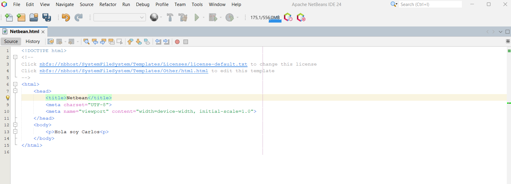
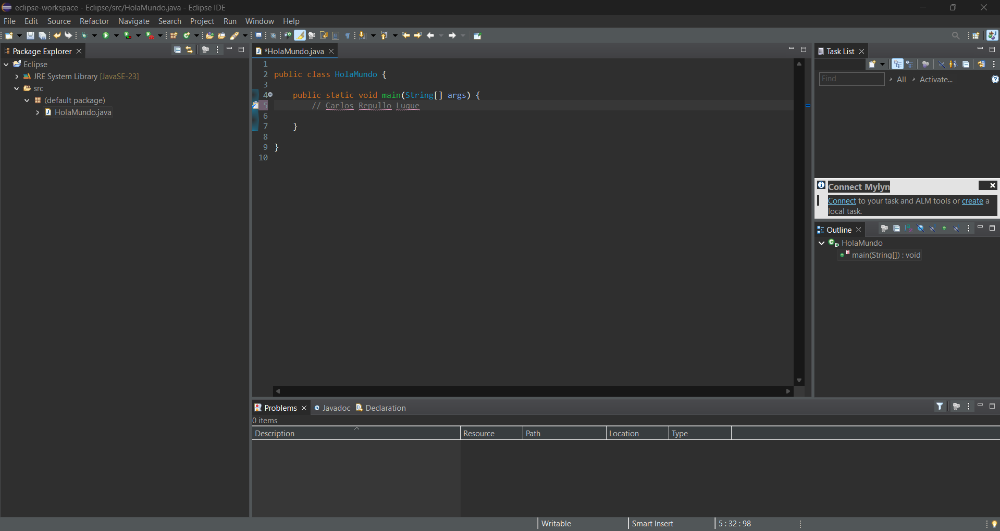
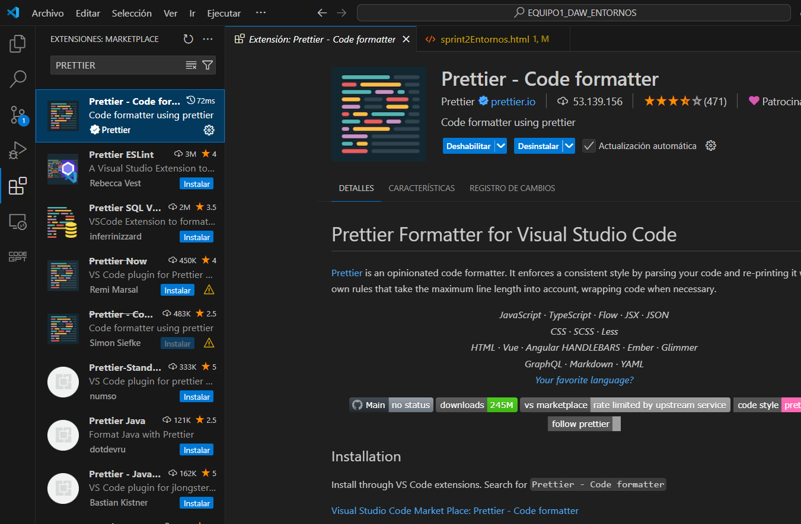
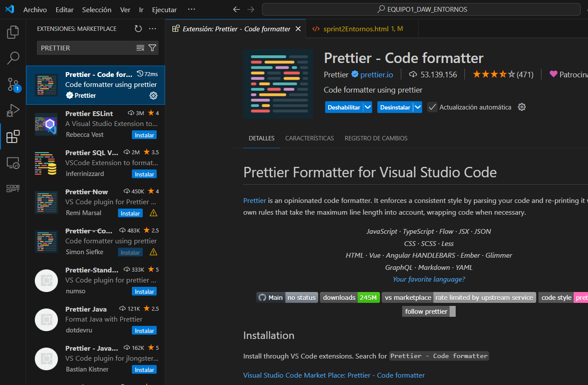

Repositorios Git
Vídeo presentación de control de versiones creado en la story anterior
Entornos de Desarrollo
Instalacion de entornos de desarrollo
Carlos Repullo Luque
He instalado Visual Netbeans y Eclipse


Instalacion de entornos de desarrollo
Daniel Jiménez Ruz
He instalado Netbeans
NetBeans
NetBeans1
NetBeans2
Intellij
Extensiones
Configuracion de Entornos de Desarrollo
Carlos Repullo Luque
Las extensiones que he instalado son JAR Builder, Pack de extensiones de Java y PRETTIER

 
